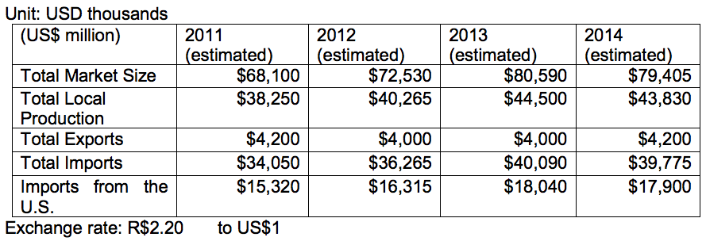

Total Market Size = (Total Local Production + Total Imports) – (Total Exports)
The 2014 estimate for purchases in Brazil’s oil and gas equipment and services market is approximately US$79.4 billion. Of that amount, nearly US$40 billion will likely be imported, with approximately US$17.9 billion being imported from the United States.
Data Sources: Statistics are based on national oil company Petrobras and other oil companies planned investments, and estimates based upon information available from oil and gas trade associations and from Brazil´s national oil regulator websites. A Booz & Company August 2010 sector study report predicted that total expenditures (investment and operation) in Brazil’s oil and gas E&P subsector will reach US$400 billion through 2020. The domestic industry will likely supply approximately 40-50 % of this total demand, depending upon how competitive their products and services are against those from international suppliers. In this regard, the Brazilian Petroleum Institute (IBP) hired Bain Company to conduct a new study about the domestic oil and gas industry’s capacity to meet ongoing and upcoming demands of oil companies. The IBP is using this study as a key component regarding its membership’s proposal to the Government of Brazil (GOB) regarding specific adjustments to Brazil’s current local content (LC) policy. As of the date of this publication, the Bain study was not yet available for public disclosure.
Although Brazil ranks 15th globally in proven oil reserves and 11th in oil production, it is not a member of the Organization of Petroleum Exporting Countries (OPEC). However, that will likely change with the large offshore oil and gas discoveries that Petrobras made in late 2007. These large finds, called the pre-salt fields, are located 200 miles off Brazil’s southern coast and lie approximately 7,000 feet below the ocean’s surface. As these logistically and technologically challenging discoveries are exploited, Brazil will likely become a major oil and gas exporter.
Brazil’s 2013 proven oil reserves reached 15.6 billion barrels, and proven gas reserves reached 458 billion cubic meters. Data included in BP Oil Company´s 2013 Statistical Review shows that Brazil ranks 3rd in Latin America for proven natural gas reserves, which is 0.2% of the world total reserves. (The Eurasia region has the world’s highest proven reserves of natural gas). However, Brazil is responsible for 0.9% of world gas consumption. Industry sources estimate that Brazil has possible reserves of 20 to 30 billion barrels and probable reserves of 60 to 80 billion of barrels. According to U.S. energy research firm PFC Energy/IHS Energy, Brazil accounted for 63% of all deep water world oil findings from 2005 to 2010. Once these oil fields are developed, Brazil will post the largest oil production growth among non-OPEC countries, sometime in the late 2020s. A recent “2030 Outlook" study, published by BP Oil Company, estimates that Brazil will be producing 5.3 million barrels per day by 2030.
In 2013, Brazil produced 2.1 million barrels of oil per day (bdp), two percent lower than in 2012; and 77.2 million cubic meters of gas per day, nine percent above 2012 levels. About 91% of Brazil’s oil production in 2013 came from offshore fields, lying mostly at extreme depths. Likewise, about 73% of Brazil’s gas production in 2013 came primarily from offshore fields. The pre-salt share accounted for 19.6% of Brazil’s oil production, reaching 412,000 bpd in 2013 -- a record in daily production -- 11% higher than 2012. By 2018, the pre-salt fields are expected to account for 52% of Brazil’s oil production.
Petrobras’ oil production accounts for 92% of Brazil’s total oil production. The company’s website states that its domestic and international proven oil and natural gas reserves were at 16 billion barrels in 2013. According to the March 2014 issue of Monitor IBP newsletter, the average oil production ranking in 2013 in Brazil by barrels per day (bpd) was:
*In the 2011 average ranking, Chevron was the third largest oil producer after Petrobras and Shell, but Chevron’s oil spill events in Brazil late that year impacted its production.
The same publication shows that as of February 2014, Petrobras had a total of 45 drilling rigs in operation (27 offshore and 18 onshore) out of a total of 56 rigs operating in Brazil. Read more of this issue of Monitor IBP Newsletter here: http://www.ibp.org.br/main.asp?View=%7BD1EE5277-8EDC-4FF6-9976-20F4199F82D4%7D&Team=¶ms=itemID=%7BD7A12031-214C-4C41-A933-2EBFD44DBA80%7D;&UIPartUID=%7BD90F22DB-05D4-4644-A8F2-FAD4803C8898%7D
Brazil’s drilling operations in 2013 were about 25% lower than the previous year, but industry contacts estimate that 2014 will close with an 18% increase in drilling activities vs. 2013. This growth will be supported by the oil companies’ exploratory commitments in connection with the oil licensing rounds that resumed in 2013. In any case, Petrobras is prioritizing investments in oil production development, optimization, and maintenance of existing large oil fields to monetize more oil. Petrobras expects its oil production in Brazil to grow by 7.5% in 2014, an ambitious target that industry contacts are skeptical about due to constraints that Petrobras is facing in the political arena. Additionally, a number of Petrobras’ projects have been delayed due to contract renegotiations and delivery issues with local equipment and service suppliers.
In 2013, Brazil exported 146,293,914 barrels of oil (approximately 400,805 bpd), against 211,215,673 barrels in 2012. About 27% of Brazil’s oil exports went to the United States (approximately 109,370 bpd), the largest consumer of Brazil’s oil. During the same period, Brazil refined about 2,073 million bpd, with 386,035 bpd being light oil that was imported to mix with Brazil’s predominantly heavy crude. Imports in 2013 totaled 146,694,740 barrels of oil (approximately 401,903 bpd), while they reached 113,066,150 barrels in 2012.
Petrobras’ sales of gasoline in the domestic market grew by 17% in 2012, and 4% in 2013, fueled by an increase in Brazil’s vehicle fleet and the reduction in ethanol consumption due to higher costs when compared to gasoline. This situation forced Petrobras to import 44,535 bpd of gasoline in 2013.
In February, 2014, Petrobras announced that it would invest US$220.6 billion (approximately US$44 billion/year) from 2014 through 2018, with 70% of this investment being destined for exploration and production (E&P). This new, five-year investment plan shows a 7% reduction of overall spending compared to the previous five year (e.g. 2013-2017) plan. According to the new plan, investments in downstream operations were cut by 30% compared to the previous plan, while E&P were increased by 4%. Upstream production targets remain the same. An additional US$63 billion will be invested by Petrobras’ partner companies in projects in Brazil, bringing the total to US$283.6 billion. However, because Petrobras will become the sole operator in the huge Libra field and other future offshore pre-salt field tenders, most business opportunities for U.S. firms lie in offering services or products to Petrobras.
Petrobras’ oil production targets in Brazil are 3.2 million bpd in 2018 and 4.2 million bpd in 2020. To achieve such production, Petrobras will invest US$153.9 billion in E&P in Brazil, 60% of which will go to the pre-salt and 40% to the post-salt. Post-salt refers to everything above the ocean's salt layer which can, however, be very deep, as most Petrobras offshore fields are. However, post-salt exploration and development entails less technological challenges than for the pre-salt layer.
Completion of the Abreu and Lima RNEST Refinery and of the first refining train at COMPERJ may be delayed due to current bid price audits that Petrobras is undergoing. Additionally, due to scandals involving a former Petrobras Downstream director, and the fact that 2014 is a presidential election year in Brazil, the partially state- owned Petrobras is in the spotlight for alleged project mismanagement. The result could adversely impact not only Petrobras’ downstream, but also their upstream projects in the near future.
In 2013, Brazil held three oil and gas licensing auctions. The 11th round (May 14, 2013) sold 142 blocks, an equivalent area of 100,372 square kilometers. The round generated a record US$1.4 billion in signature bonuses and a guaranteed minimum of approximately US$3.5 billion in new E&P investment spending. Petrobras bid successfully on 34 blocks, most of which were bid in partnership with other companies. In contrast to the pre-salt framework -- in which Petrobras must be the sole operator under a production-sharing agreement (PSA) model -- under these 11th round oil concession agreements, Petrobras’ partners can be the operators
This bid round and two others, including the Libra pre-salt, are expected to translate into substantial business opportunities for suppliers of oil and gas equipment and services. The Libra oil field, discovered off Brazil’s southeast coast, is estimated to contain recoverable resources ranging between 8 billion barrels to 12 billion barrels of oil, according to ANP, and could generate $1 trillion in public revenues over 30 years. Results and information on the 2013 rounds can be viewed at http://export.gov/brazil/industryhighlights/energy/eg_br_051813.asp or at the ANP website: http://www.brasil-rounds.gov.br/index_e.asp.
A few players in Brazil are beginning to drill pilot shale gas wells, but they face challenges related to operational inefficiencies in performing hydraulic fracking. These challenges include lack of good transportation infrastructure, few fracking trucks, high financial costs, and lack of large scale natural gas consumption in Brazil. For fracking to become economically viable there must be economies of scale in such activity (e.g. shale wells must be drilled in sequence). Such economies of scale may gradually start as a result of the recent (December, 2013) 12th oil and gas round that included non-conventional gas areas. Industry analysts also believe that if the GOB includes more natural gas in future electrical power auctions, it may help supply an increasing demand for the gas produced in non-conventional fields.
Lately, in addition to the gas imported from Bolivia and Brazil’s limited natural gas domestic production, the expansion of gas consumption in Brazil has been mostly supplied by Liquefied Natural Gas (LNG). Petrobras currently has three LNG regasification terminals in the States of Ceará, Rio de Janeiro, and Bahia and is planning to open one more in the state of Rio Grande do Sul. The Brazilian Association of Piped Gas (ABEGAS) also envisions a market for small LNG plants to be built near onshore gas fields as an alternative to bring gas to potential consumers that are not served by gas pipelines.
The first concession of a gas pipeline to be auctioned in Brazil will be for a stretch linking Guapimirim to Itaboraí, in Rio de Janeiro State, 11 kilometers long and with capacity of transporting 17.4 million cubic meters of natural gas per day. The R$112.3 million (about US$ 50 million) project is part of the Ten-Year Plan for the Expansion of the Pipeline Transport Network (PEMAT http://www.epe.gov.br/PEMAT/Forms/PEMAT.aspx), for the 2013-2022 period. The auction date has yet to be determined. ANP will coordinate this and future auctions to build gas transportation pipelines. Based on information provided by Brazil’s national energy research agency (EPE), ANP will set the maximum allowed annual revenue to investors. An overview of Brazil’s natural gas sector can be viewed in this report: http://buyusainfo.net/docs/x_1115840.pdf.
Market Challenges
The main impediments for U.S. companies wanting to operate in the Brazilian petroleum sector are regulations concerning domestic content and priority given to Petrobras. The Brazilian government has reserved a 30% equity share for Petrobras in all future pre-salt drilling and development concessions, according to a 2010 Brazilian law created specifically to address upcoming pre-salt auctions. This law also requires Petrobras to lead operations in both exploration and development on all pre-salt operations. The exploration of the fields will be done through consortia, where Petrobras will hold at least 30% equity in each oil block. The Libra pre-salt auction held on October 21, 2013 was the first bid under this new model (e.g. Production Sharing Agreement or PSA). In specific cases, as decided by the Brazilian National Energy Council, Petrobras may be called upon to explore selected pre-salt oil fields without a tender process. These regulations aim to exclusively promote Brazilian national interests in order to protect the industry from being dominated by foreign companies. The Brazilian government policy also promotes domestic industry clusters; that is, groups of manufacturing companies in related subsectors such as valves, pipes, vessels, etc. that support oil drilling.
However, despite local content requirements, industry contacts have been speculating about possible flexibility or compensation mechanisms that they can propose to the Brazilian oil regulator to deal with limited domestic industry supply capacity. For example, the oil industry would like to calculate their current investments in local R&D centers and labor training in their local content contractual obligations. Also, in the case of Petrobras, recent media reports noted that for selected oil production projects, Petrobras may increase purchase of specific foreign types of goods and services to speed up their projects and benefit from more competitive prices. Petrobras is pressed with achieving an ambitious oil production target, but its domestic fuel prices have been controlled by the Brazilian government to avoid inflation to rise in an election year. Hence, they are reportedly evaluating ways to mitigate risks of having main oil development projects postponed, due to limited domestic industry capacity.
Recently, the Brazilian Machinery Association (ABIMAQ), a strong lobbying arm for local manufacturers reported that Brazil has imported a total of US$141 billion in vessels, machines and parts in the last three years. In 2013 alone, ABIMAQ noted in an article, Brazil invested US$35 billion to import offshore support vessels and offshore rigs. The data, according to ABIMAQ, relates to vessels and materials imported under the special oil and tax regime (Repetro). Information on Repetro can be seen at the Brazilian Federal Income Agency http://www.receita.fazenda.gov.br/Legislacao/LegisAssunto/repetro.htm (in Portuguese).
Informal English translations can be seen at: http://www.ldccomex.com.br/english/services/control-systems/repetro-control-system/repetro-control-system http://www.nbcc.com.br/news/view/85 .